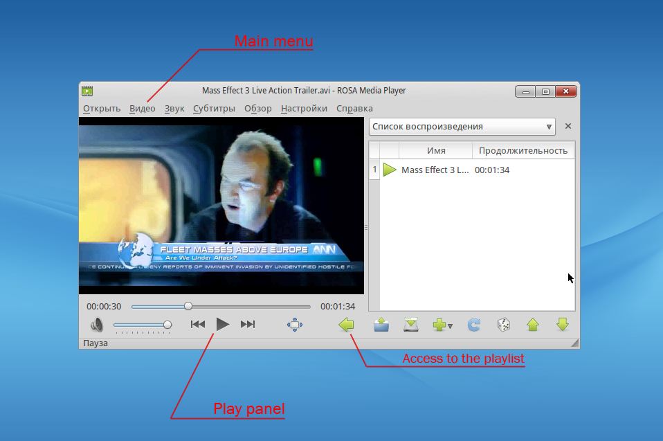
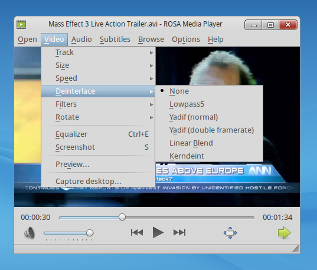
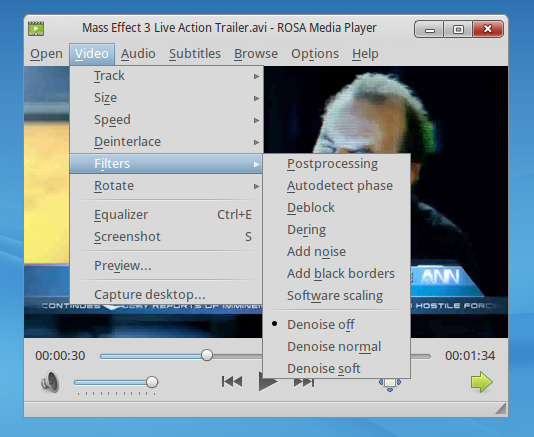
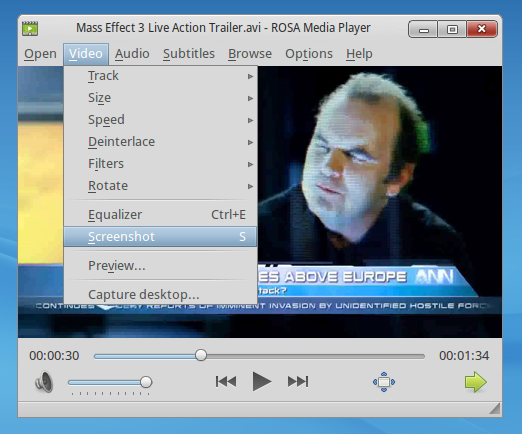
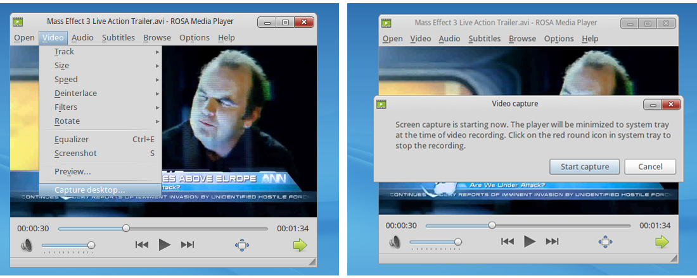
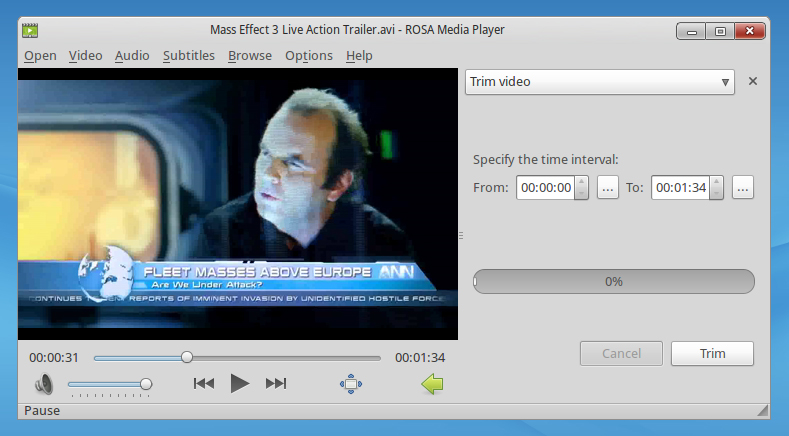
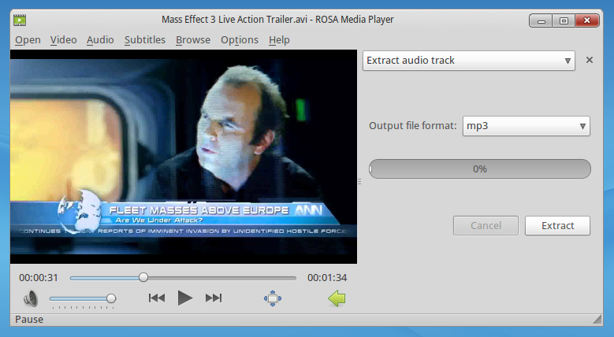

ROSA Media Player Manual
Introduction
ROSA Media Player (ROMP) is an unusual videoplayer which differs from similar products due to combination of functionality and easy control. We are trying to refine our product, following the way of simplifying interface and refusing useless elements. On the other hand we are increasing program's potential, adding new instruments which haven't been presented yet.
Technically, ROMP is based on MPlayer and SMPlayer technologies. However our opinion is that SMPlayer is too overloaded with options. In addition, because of ideological differences, our developments can’t be implemented in this project. These two reasons led us to idea of creating our own videoplayer.
Features
ROMP works with all popular types of video files. Strictly speaking, full list of supporting formats is identical to MPlayer's, which became the foundation for our application.
The most popular video formats, which can be opened by ROMP:
Installation
Process of installation doesn't take much time and can be carried out from console as well as from «ROSA Control Center».
First variant. You just need to open console, enter the superuser mode and use the following command:
urpmi rosa-media-player rosa-media-player-plugin
For installation in graphics mode you should open «ROSA Control Center» and go to tab «Programs managing». Further you should click on «Installing and deleting programs» and in left window choose tab «Video». In opened list of applications you should choose packages rosa-media-player and rosa-media-player-plugin.
It is worth noting that if you haven't got tab «Video» or you can not detect packages in the list of programs, it means that application's repositories aren't adjusted in your system.
Interface
As you can see on the screenshot, the most of effective area is taken by currently playing video. In the upper part we can find main menu, from which we carry out full control over all program's actions.
Play panel is located below. It is designed in «classic» style so it shouldn't mislead you. The most interesting part of player's interface is small green pointer which can be found in the right lower corner. It opens playlist and gives an access to video edit functions.

Key differences
By creating ROMP, first of all we wanted to introduce something new for such trivial thing as video player. And we had a great results there so let's consider in details interesting features of our application.
Playing
One of the main advantage of our product is wide facilities of working with video. Below we will tell you about the most interesting and useful innovations.
Deinterlacing
Interlacing is a nasty effect, which appears while watching on computer a video which has been recorded by old cameras. The point of it is that borders of dynamic objects become fuzzy.
ROMP has a lot of different instruments for reducing this effect. All of them are available in tab «Video», which located in main menu. Here you can find such things as postprocessing, deface, dering and some options of denoise.

Filtres
ROMP helps you to throw off not only interlacing effect but also a lot of another unpleasant distortions. In tab «Filters», which is easy to find in tab «Video», a great amount of different adjuvants are located.

Screenshot
You can use this little function for operative picturing part of video. After clicking ROMP creates image in png format and saves it in folder «Images».

Capture desktop
Due to this instrument you can forget about third-party programs for capturing desktop. Click on this tab and you will see a message telling that all actions happening on the screen will be recorded. Click «Start».
Player rolls up in tray. If you want to stop capturing, click on red sign, which appeared in tray. The record will be saved in folder «Video».

Edition
App's market is saturated with serious professional software. A lot of these programs are really all-powerful in their area of competence. However, these applications are too complex and sometimes untrained user can have difficulties with them. We think that for usual people simplicity of product and availability of main instruments are important.
In simple terms: if you want to cut a sheet of paper you don't need a chainsaw, you need scissors! So we decided to build in ROMP the simplest functions for video editing.
Video trim
This instrument is really easy and its interface is laconic.
Pay attention to the little buttons «...» near the input fields for start and end of the interval: after clicking current play time adds into field. Now you don’t have to enter figures by hand, just use slider for search.
If you want to cut a part of video, click on button «Trim». It will be saved in the same folder with original video.

Extract audio track
Frequently, users like only sound in video while the picture interests them much less. Now ROMP can save audio track from movies and you don't need to open video files.
This instrument shouldn't mislead you. You can choose format of the output file (ogg or mp3). For saving click on button «Extract». File will be saved in the same folder with original video file.

Main features
Of course, the list of ROMP's functions isn't limited by these six points. In fact player has really great amount of them. You can choose different video tracks, change video size in wide range, change speed of playing and pictures values, particularly: contrast, brightness, saturation, gamma and others. In addition it has wide choice of tools for work with video sound. You can choose audio tracks, load them from external files, do fine-tuning of sound using equalizer and filters. And if you suddenly want to watch your favorite movie with subtitles then ROMP offers you wide functionality: you can quickly load them from external file and tune their size or you can find required in one click on opensubtitles.org.
Conclusion
We sincerely hope that you will like ROMP. Despite the fact that we permanently improve our products, no one is immune from mistakes. Please, write us about them on support@rosalab.ru .